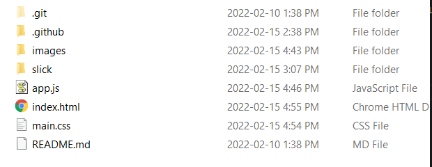
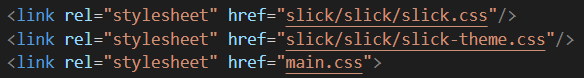
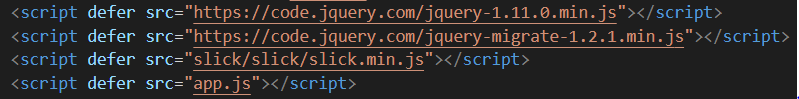
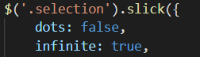
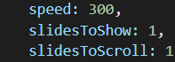
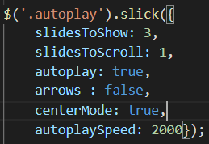
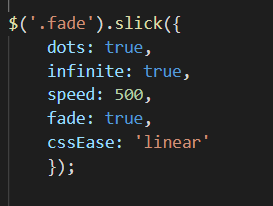

Getting Started
Files To Download
This Link Will take you to the page where you can click "get it now" at the top and then click the "Download Now" button to download slick
Relocate To Project Folder
Next you will need to extract the zip folder and put it into your project folder (I renamed mine to just "slick" but yours will be called "slick-" followed by a version code)
linking CSS
Now that you have the necessary files you will need to link them to your webpage. You can copy the following lines into link elements in your head element as seen in the above image
rel="stylesheet" href="slick-1.8.1/slick/slick.css"
rel="stylesheet" href="slick-1.8.1/slick/slick.min.css"
(The main.css in the above image is an additional css file where I added my own CSS)
Linking JavaScript and JQuery
You will also need to link the necessary jquery and js files to you webpage. you can copy the following lines into script elements in your head element as seen in the above image
defer src="https://code.jquery.com/jquery-1.11.0.min.js"
defer src="https://code.jquery.com/jquery-migrate-1.2.1.min.js"
defer src="slick1.8.1/slick/slick.min.js"
defer src="app.js"
(The app.js is an additional js file where you will specify how you want your slick carousels to work. you will have to create this file your self using the tools of your IDE of choice)
Good To Go
Congratulations!
Your set up is now complete and we can move on to learning how to use slick
How To Use Slick
Creating a Slick Carousel

1. First you will need to create a div element and give it a class, then you will have to put and elements you want in the carousel inside that div
2. Create a "$(document).ready(function(){})" in your app.js
3. Within this function you will put $(".your-class-name").slick()
4. Within the slick() at the end of the previous step you will set the attributes of the slick carousel. (we will go over all the attributes on the next slides)
the image above is an example of what it should look like with some additional attributes
Attributes
Slick comes with many different ways to customize the look and functionality of its carousels.
We will start by going over the ones you saw in the image on the last slide.
Dots and infinite
in your slick method you can set the "dots" attribute equal to true to have dots for each slide in the carousel appear at the bottom
Likewise you can set the "infinite" attribute equal to true to have the carousel loop back to the first slide when it gets to the end
SlidesToShow, SlidesToScroll and Speed
The SlidesToShow attribute and SlidesToScroll attribute will ditermine how many slides are displayed at once and how many slides it will scroll when the button is clicked respectively
The Speed attribute will determine how quicky the scrolling of the slides occurs
centerMode

You can use centerMode the center your carousel and change its look
Fade
You can use the CSSease attribute to create a transition when you scroll through your slides
Ready For The Next Level
With these attributes you can make an easy, good looking slick carousel. But now its time to look at some more specific examples of what you can do with Slick
Cool Things With Slick
The following are example of what you can do with Slick along with the javascript used to create them